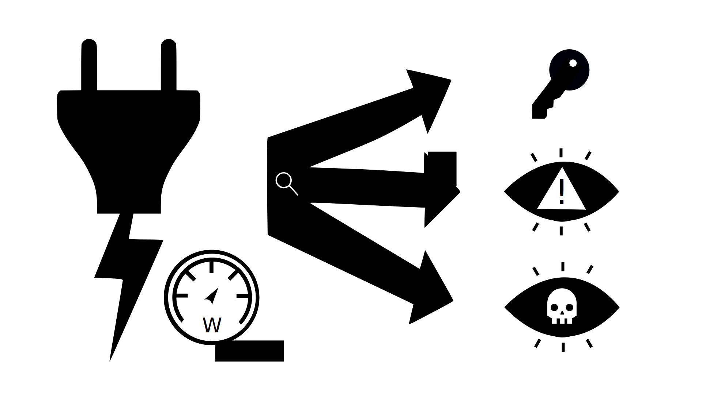

Introduction
Welcome to my personal website. Here you can find a rough overview of what i worked on in the past and what i'm currently involved in.
You can find the Home button on the right upper corner and any red marked text will bring you to the indicated part
General
Right now I'm a security system analyst for vehicles at Cariad SE. This means my main role would involve
My main focus lies in the security of vehicles and their connectivity.

Analyzing the power consumption of a device can be used to extract Secret Keys. In my Bachor thesis, I could also show that finding anomalies and malware is also possible.
Curriculum Vitae Breakdown
Education
- Bachelor of Science in Technical Computer Science - OTH Regensburg
- Master of Science in Applied Research: Cyber-Physical and Automotive Security - OTH Regensburg
Professional Experience
- [Working Student] Full-Stack Developer (C#/Winform/WPF) | Krones (2017 - 2018 & 2019 - 2020)
- [Intern] Car2X Developer | ASAP GmbH (2018 - 2019)
- [Working Student] Leading Researcher | InS-3 GmbH (2020 - 2021)
- [Full Time] Security Engineer | Cariad SE (2021 - 2022)
- [Full Time] Security System Analyst | Cariad SE (2022 - Present)
Projects
Click the items to find out more.
IT Security Tooling for Cyber-Physical Systems
Audi Q6, A5, A6
Porsche eMacan
2025/2026
Audi Q3
and some cars yet to come
Contact
E-mail adress: [Censored because of bots]
Misc
- I'm an embedded devloper by heart, therefore i find joy in developing performant and target-orianted applications. And as i haven't done a lot of web development, this means website this website won't have a lot of eye candy, like a full fledged frontend/web devloper might achieve. Nonetheless it should achieve its goal of getting the information you need, to you in the least amount of time!
- This website uses 0 lines of javascript.
- This website is about 105 kB big.
- This website is hosted on Github Pages because it comes with free SSL/https.
- This website takes no Server-CPU-Power aside from providing the 105 kB and the SSL-connection.
- This website will probably forever work best in Firefox, as their implementation of the Scroll-Stop-Feature is the best one.
- This website was designed/written from the ground up by me.
- As it may have become obvious with this website: I like Dark Modes :)